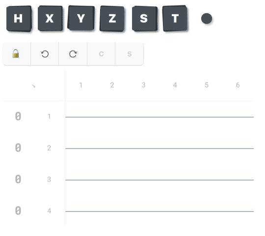

Expanding soon…
What good is a novel drag-and-drop circuit editor interface if no one knows how to use it? Expect to see a slew of mini-tutorials like the one below landing in Summer 2020.
Create controlled gates
Controlled gates are fundamental to quantum computing. This simple example uses a Hadamard gate, then joins an “identity cursor” (an abstraction invented specifically for the Q editor) with a Pauli X gate to create a controlled-not gate, resulting in a Bell state.
Drag an identity cursor onto your circuit, then drag another gate to the same moment. Highlighting the two gates will enabled the “C” (control) button. Tap the control button to join the two, creating a controlled gate.
